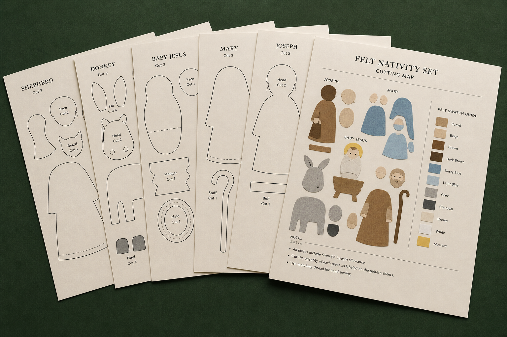
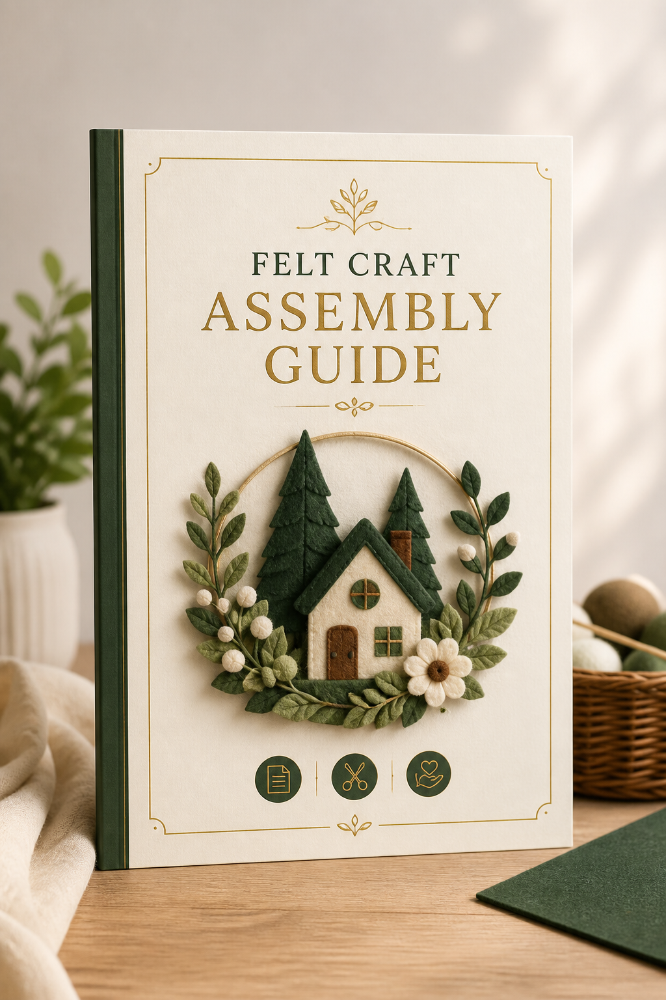

Imprima
PDFs em A4, escala real, sem redimensionar nem adivinhar.

Moldes A4 em tamanho real + guias em PDF. Imprima, recorte, costure à mão e monte a cena completa, mesmo se você nunca fez feltro.
Quero montar meu presépio · R$37Produto digital · Acesso imediato · Garantia de 7 dias
Como funciona
PDFs em A4, escala real, sem redimensionar nem adivinhar.
Cada parte vem nomeada, com quantidade e cor sugerida.
Pontos manuais simples. Máquina não é obrigatória.
Siga o manual até a cena completa no lugar.
A cena completa
Personagens no mesmo estilo e proporção, para a mesa ficar harmônica, não um amontoado de peças soltas.


O que você recebe
Arquivos organizados para imprimir e costurar, feitos para quem quer clareza, não aula interminável.

Partes nomeadas, quantidade de corte e cor sugerida em folhas A4. A base da cena da foto.
Essencial
Pontos manuais, enchimento, união, rostos e acabamento, do primeiro corte à peça em pé.
InclusoLista pronta de feltros, linhas, enchimento e acessórios. Compre uma vez, sem erro na loja.
InclusoMoldes extras no mesmo espírito do Natal, para acompanhar o presépio ou presentear.
InclusoPara quem é
Se a sua prioridade é a peça na mesa (harmônica, completa, no estilo da foto), este pacote foi feito para você.
Oferta Natal Feito à Mão
Tudo organizado para você imprimir e montar a cena deste Natal.
menos que o feltro da primeira peça
Acesso imediato · Garantia de 7 diasGarantia simples
Você tem 7 dias após a compra para avaliar moldes e guias. Sem enrolação: se não for o que precisava, solicite o reembolso dentro do prazo.
Dúvidas frequentes
Não. Você recebe PDFs para imprimir em casa (ou em qualquer gráfica) em folhas A4.
Sim. Os arquivos já vêm em tamanho real. Você imprime em escala 100%, sem redimensionar. As configurações estão no guia.
O projeto foi pensado para montagem à mão, com pontos simples. O manual cobre união, enchimento e acabamento sem exigir máquina.
Não. O pacote é 100% PDF: moldes + guias. Ideal se você prefere seguir no papel, no seu ritmo, sem tela aberta o tempo todo.
Não. Feltro, linhas, enchimento e acessórios você compra à parte. A lista pronta vem no guia de materiais.
Se você comprar agora e seguir o manual, sim: é projeto de costura manual, peça a peça. Quanto antes imprimir, mais folga até a data.
Reembolso em até 7 dias após a compra, se os arquivos não fizerem sentido para você.